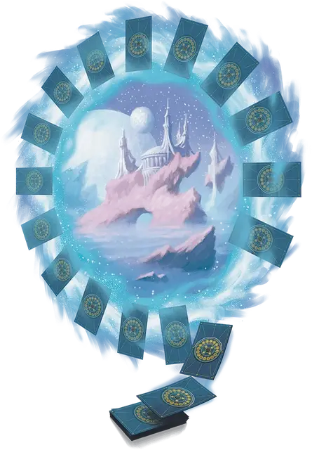

Колода измерений
Deck of Dimensions
Чудесный предмет, очень редкий (требуется настройка)

Рекомендованная стоимость 5 001-50 000 зм
Рубашка карт этой колоды украшена замысловатыми узорами, представляющими различные планы существования. Колода имеет 6 зарядов. Удерживая её, вы можете израсходовать 1 или более его зарядов, чтобы использовать следующие свойства:
- Краплёная карта. Бонусным действием вы можете израсходовать 1 заряд, чтобы взять карту из колоды и положить её в незанятое пространство в пределах 5 футов от себя. После чего карта отмечается невидимым символом. Единожды, действием, в течение следующих 24 часов, вы можете произнести название отмеченной карты и телепортироваться к местоположению карты вместе с любым снаряжением, которое вы носите, появляясь в ближайшем незанятом пространстве к карте. После того, как вы телепортируетесь таким образом или спустя 8 часов, карта возвращается в колоду, и метка на ней исчезает.
- Риффлинг порталов. Действием вы можете израсходовать 3 заряда для наложения заклинания магические врата [arcane gate] с помощью колоды. Колода рассыпается, а парящие карты создают портальный круг заклинания. Когда заклинание заканчивается, колода снова появляется в вашем распоряжении.
- Перетасовывающая поступь. Бонусным действием вы можете израсходовать 1 заряд, чтобы метнуть карту из колоды в незанятое пространство в пределах 60 футов и телепортироваться туда вместе с любым снаряжением, которое на вы несёте или носите с собой. После чего карта исчезает и возвращается в колоду.
Колода восстанавливает 1к6 израсходованных зарядов ежедневно на рассвете.